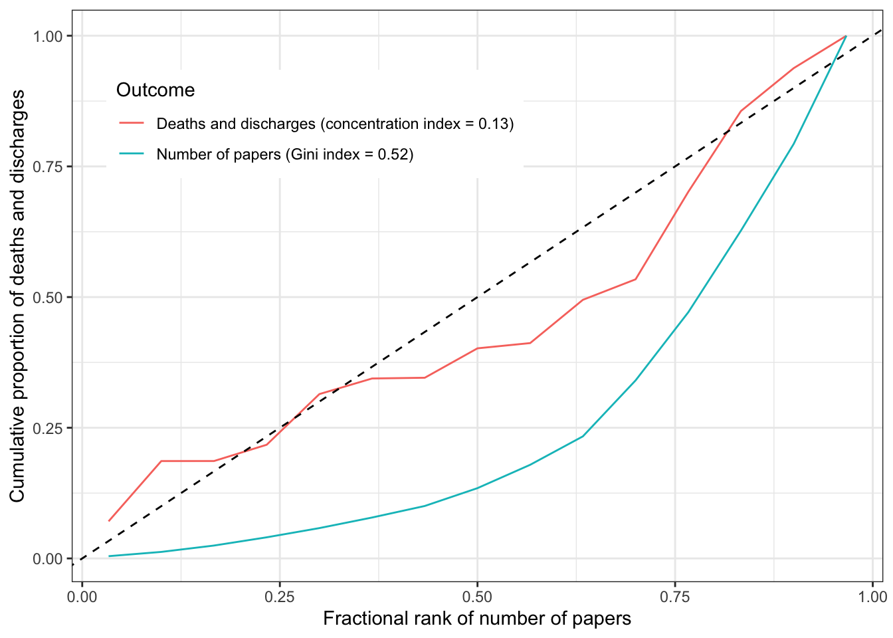

Frankel 1989 discussed that part of the issue of waiting lists was that professionals would prioritise treatment for things that were more fashionable rather than more urgent or prevalent.
This is the dataset:
library(dplyr)
Attaching package: 'dplyr'
The following objects are masked from 'package:stats':
filter, lag
The following objects are masked from 'package:base':
intersect, setdiff, setequal, union
library(data.table)
Attaching package: 'data.table'
The following objects are masked from 'package:dplyr':
between, first, last
The paper points out that there are a highly disproportionate number of papers for slow viruses of the CNS. This does look like a major misalignment of resources and needs presented this way, but it is a ratio of two low numbers.
Instead, plot papers against numbers of deaths and discharges. This might more reflect the degree to which there is misalignment between resources and health needs
The fraction of all papers that were on the slow viruses of the CNS was 0.012.
Inequality analysis
The Gini index represents the degree to which resources are equally allocated. A high Gini index means that a large fraction of resources are attributed to a small number of categories. The concentration index examines the degree to which another variable can explain the inequality within a Gini coefficient. A concentration index that is equal to the Gini index means that there is perfect alignment of the second variable to the resource. A concentration index of 0 means that there is no alignment (it’s basically random).
This plot shows that there is unequal attention to diseases in the literature, and there does match to some degree the unequal distribution of disease burden.
library(rineq)out1 <- rineq::ci(ineqvar = dat$papers,outcome = dat$papers, method ="direct")gini <-tibble(ci = out1$concentration_index,ci_se =sqrt(out1$variance),ci_lci = ci -1.96* ci_se,ci_uci = ci +1.96* ci_se)out2 <- rineq::ci(ineqvar = dat$papers,outcome = dat$dd, method ="direct")ciout <-tibble(ci = out2$concentration_index,ci_se =sqrt(out2$variance),ci_lci = ci -1.96* ci_se,ci_uci = ci +1.96* ci_se)make_plot_dat <-function(x) { myOrder <-order(x$fractional_rank) xCoord <- x$fractional_rank[myOrder] y <- x$outcome[myOrder] cumdist <-cumsum(y) /sum(y)tibble(xCoord, cumdist)}plot_dat <-bind_rows(make_plot_dat(out1) %>%mutate(group=paste0("Number of papers (Gini index = ", round(out1$concentration_index, 2), ")")), make_plot_dat(out2) %>%mutate(group=paste0("Deaths and discharges (concentration index = ", round(out2$concentration_index, 2), ")")))ggplot(aes(x = xCoord, y = cumdist, group = group), data = plot_dat) +geom_line(aes(colour = group)) +geom_abline(slope =1, intercept =0, linetype ="dashed") +theme_bw() +theme(legend.position ="inside", legend.position.inside=c(0.3,0.8)) +labs(x ="Fractional rank of number of papers",y ="Cumulative proportion of deaths and discharges",colour ="Outcome" )

However the concentration index has quite a large confidence interval.
ciout %>% kable
ci
ci_se
ci_lci
ci_uci
0.1328638
0.1044544
-0.0718669
0.3375944
Summary
There is some concordance between the inequality in disease attention and the disease impact, but these estimates are imprecise.